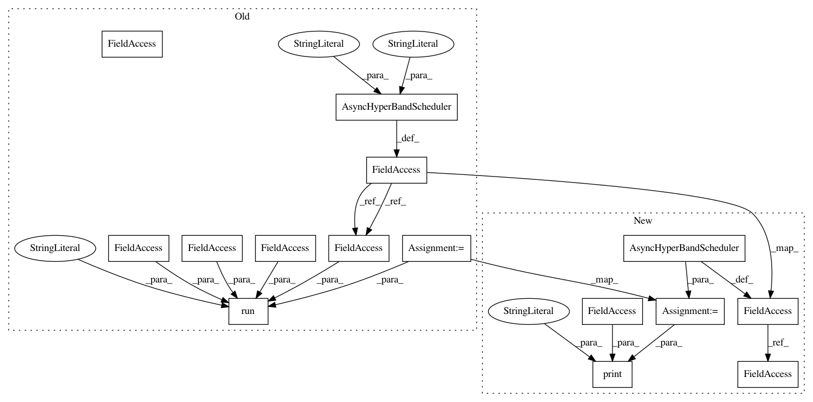

8b3f79f3079834f00c7ec62d5decd6bc026c1bc8,python/ray/tune/examples/zoopt_example.py,,,#,30
Before Change
args, _ = parser.parse_known_args()
ray.init()
tune_kwargs = {
"num_samples": 10 if args.smoke_test else 1000,
"config": {
"steps": 10,
"height": tune.quniform(-10, 10, 1e-2),
"width": tune.randint(0, 10)
}
}
// Optional: Pass the parameter space yourself
// space = {
// // for continuous dimensions: (continuous, search_range, precision)
// "height": (ValueType.CONTINUOUS, [-10, 10], 1e-2),
// // for discrete dimensions: (discrete, search_range, has_order)
// "width": (ValueType.DISCRETE, [0, 10], True)
// // for grid dimensions: (grid, grid_list)
// "layers": (ValueType.GRID, [4, 8, 16])
// }
zoopt_search_config = {
"parallel_num": 8,
}
zoopt_search = ZOOptSearch(
algo="Asracos", // only support ASRacos currently
budget=tune_kwargs["num_samples"],
// dim_dict=space, // If you want to set the space yourself
metric="mean_loss",
mode="min",
**zoopt_search_config)
scheduler = AsyncHyperBandScheduler(metric="mean_loss", mode="min")
tune.run(
easy_objective,
search_alg=zoopt_search,
name="zoopt_search",
scheduler=scheduler,
**tune_kwargs)
After Change
// dim_dict=space, // If you want to set the space yourself
**zoopt_search_config)
scheduler = AsyncHyperBandScheduler()
analysis = tune.run(
easy_objective,
metric="mean_loss",
mode="min",
search_alg=zoopt_search,
name="zoopt_search",
scheduler=scheduler,
num_samples=num_samples,
config={
"steps": 10,
"height": tune.quniform(-10, 10, 1e-2),
"width": tune.randint(0, 10)
})
print("Best config found: ", analysis.best_config)
In pattern: SUPERPATTERN
Frequency: 3
Non-data size: 15
Instances
Project Name: ray-project/ray
Commit Name: 8b3f79f3079834f00c7ec62d5decd6bc026c1bc8
Time: 2020-11-14
Author: rliaw@berkeley.edu
File Name: python/ray/tune/examples/zoopt_example.py
Class Name:
Method Name:
Project Name: ray-project/ray
Commit Name: 8b3f79f3079834f00c7ec62d5decd6bc026c1bc8
Time: 2020-11-14
Author: rliaw@berkeley.edu
File Name: python/ray/tune/examples/zoopt_example.py
Class Name:
Method Name:
Project Name: ray-project/ray
Commit Name: 8b3f79f3079834f00c7ec62d5decd6bc026c1bc8
Time: 2020-11-14
Author: rliaw@berkeley.edu
File Name: python/ray/tune/examples/ax_example.py
Class Name:
Method Name:
Project Name: ray-project/ray
Commit Name: 8b3f79f3079834f00c7ec62d5decd6bc026c1bc8
Time: 2020-11-14
Author: rliaw@berkeley.edu
File Name: python/ray/tune/examples/genetic_example.py
Class Name:
Method Name: